Bioinformatics applied to
cancerous tissues from humans
View the presentation
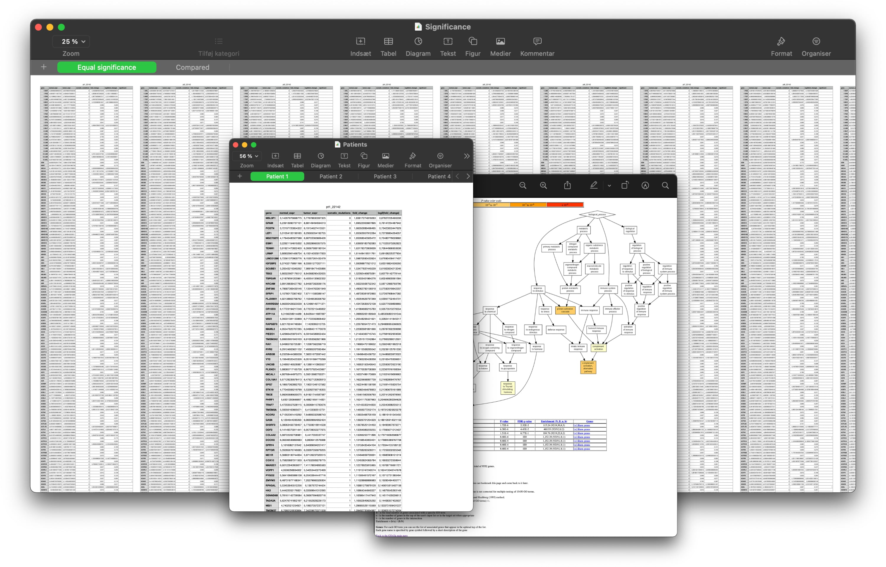
cancerous tissues from humans
Systems biology
at Denmark's Technical University
The "Introduction to Systems Biology" course is a Bachelor level course aiming at:
- Teaching a conceptual introduction to the core of Systems Biology.
- Having a very large focus on Network Biology, including hands-on experience on how to work with, and critically interpret biological networks.
- All theory will be related to biological concepts that it can be applied to.
- We will work with examples of how the Systems Biology approach can be applied to biomedical research, and help find new biomarkers and potential drug targets.
- The students will learn how to use the biological networks as a scaffold for more refined analyses using data integration (e.g. filtering the network using tissue-specific expression, or mapping in protein meta data).
- Teaching a conceptual introduction to the core of Systems Biology.
- Having a very large focus on Network Biology, including hands-on experience on how to work with, and critically interpret biological networks.
- All theory will be related to biological concepts that it can be applied to.
- We will work with examples of how the Systems Biology approach can be applied to biomedical research, and help find new biomarkers and potential drug targets.
- The students will learn how to use the biological networks as a scaffold for more refined analyses using data integration (e.g. filtering the network using tissue-specific expression, or mapping in protein meta data).
Exam
Presentation.key
Medical image processing
and radiological analysis
View the exercise reports
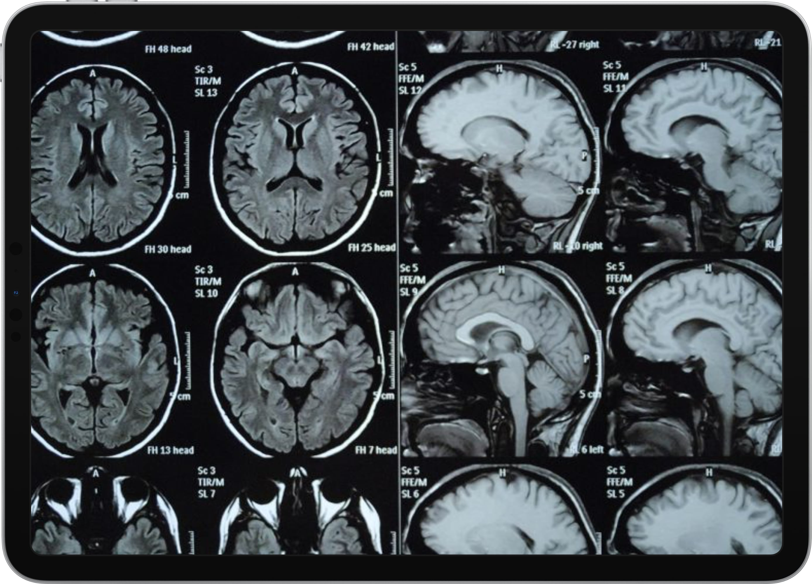
and radiological analysis
Medical image analysis
at Denmark's Technical University
Det overordnede mål med kurset er at give en generel introduktion til medicinsk billedanalyse. Efter kurset vil du have viden om hvilke typer billeder der optræder i den kliniske praksis og hvilke muligheder man har med disse billeder. Derudover er målet at du er i stand til at implementere og anvende simple billedanalysesystemer. Det tilstræbes også, at du kan evaluere resultater fra billedanalysen ved at sammenligne med kliniske vurderinger.
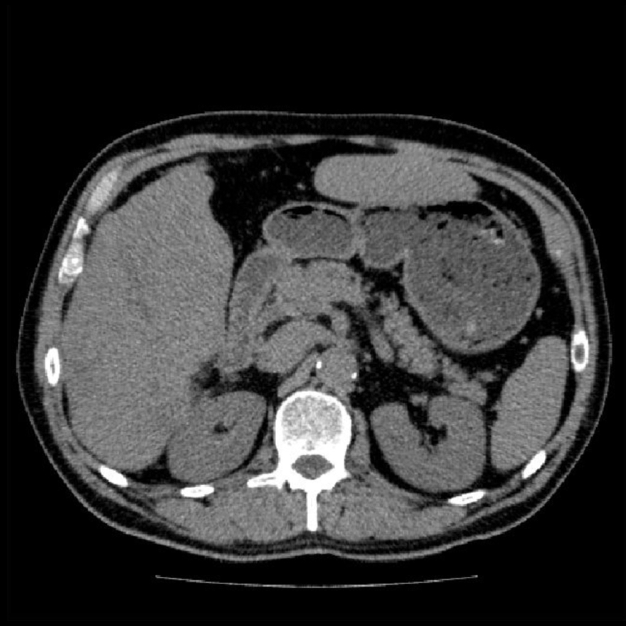
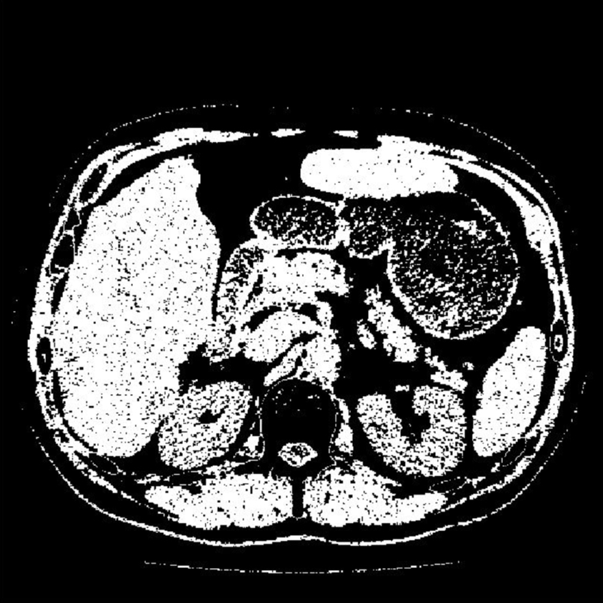
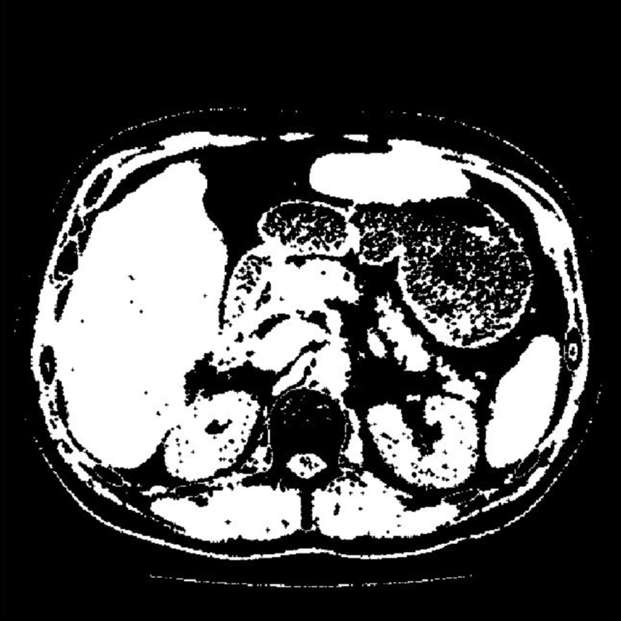
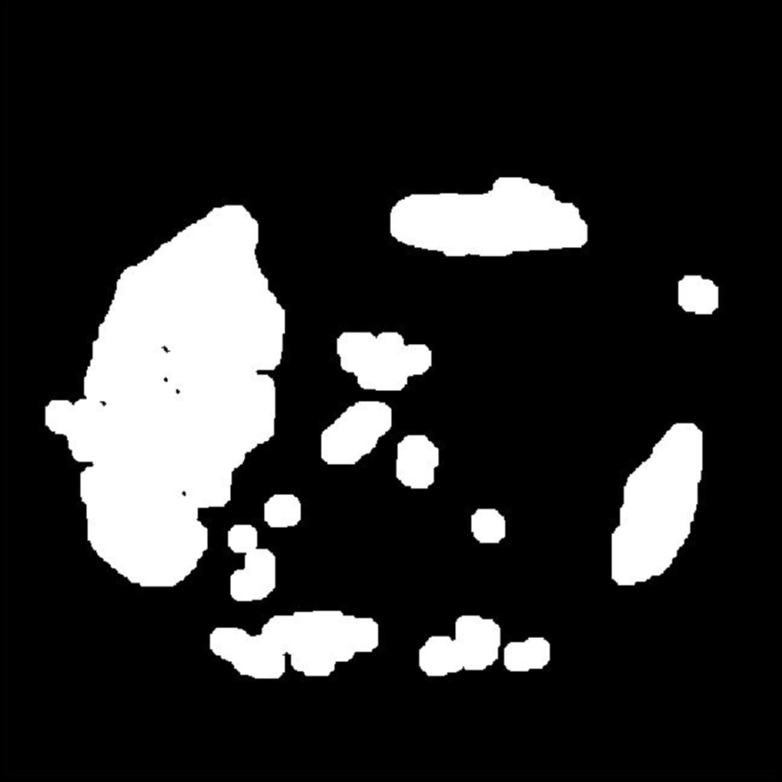
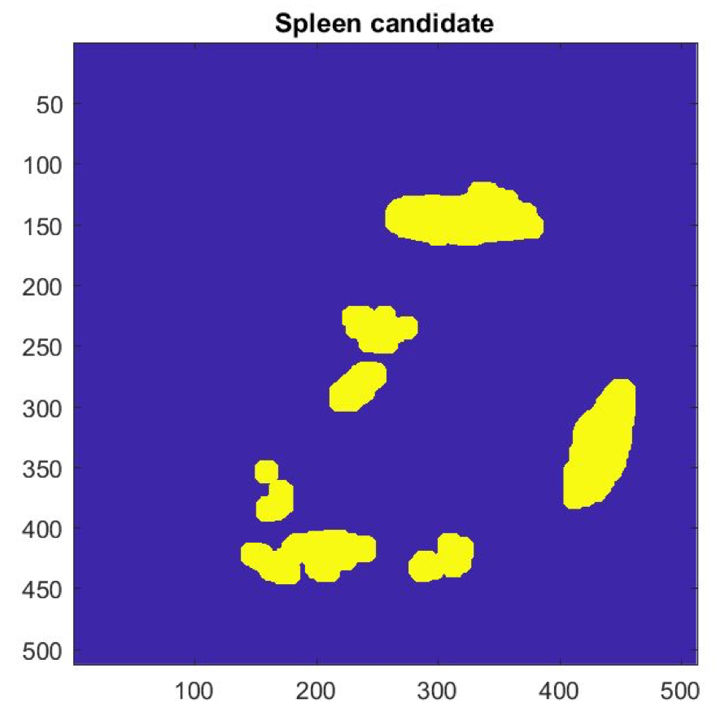
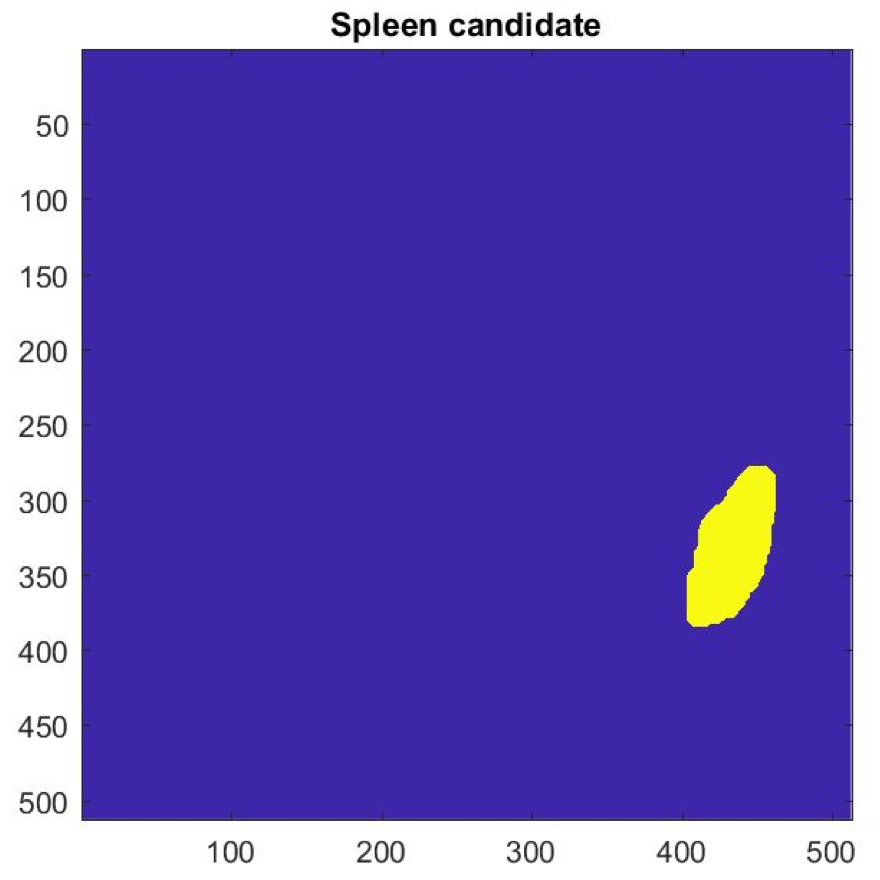
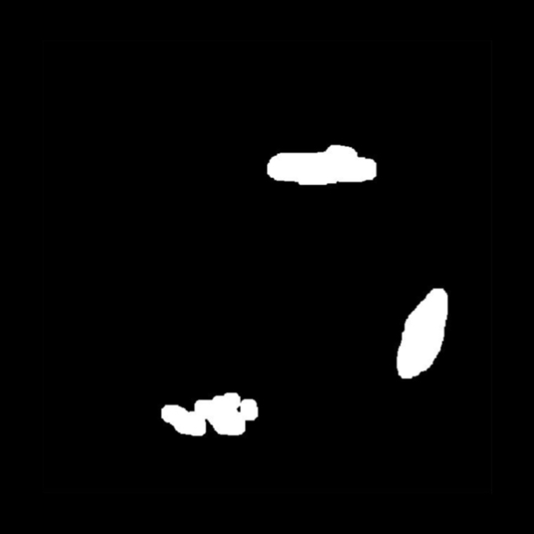
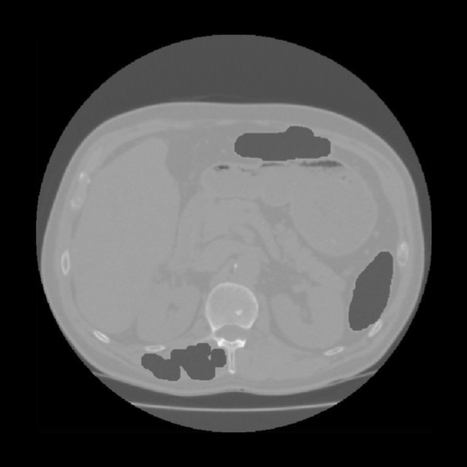
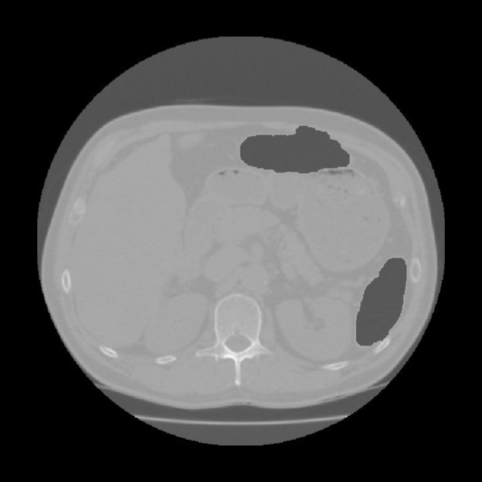
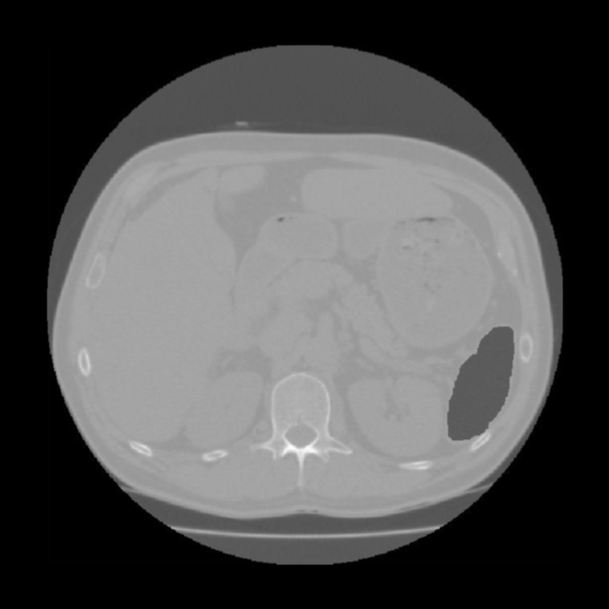
MATLAB code
functions.m